2026
AI4AI at Scale: A Full-Pipeline System for Enhancing LLM Agentic Capabilities
We present AI4AI, a bounded-exploration, verification-gated framework for improving complete agentic systems, instantiated in XYZ-Aquila, a family of open-weight Deep Search agents. XYZ-Aquila-mini attains the highest score in every column of the seven-benchmark sub-40B open-weight table, while XYZ-Aquila-pro leads the sub-400B table.
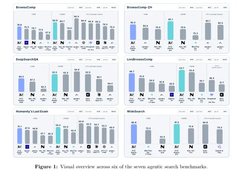
Reasoning as Gradient: Scaling MLE Agents Beyond Tree Search (MLE Setting of RD-Agent)
We introduce Gome, the MLE setting of RD-Agent, mapping diagnostic reasoning to gradient computation, success memory to momentum, and multi-trace execution to distributed optimization. Under a closed-world protocol, it reaches 35.1% any-medal rate on MLE-Bench with a 12-hour single-V100 budget, and scaling experiments show that gradient-based optimization increasingly outperforms gradient-free tree search as model reasoning capabilities improve.
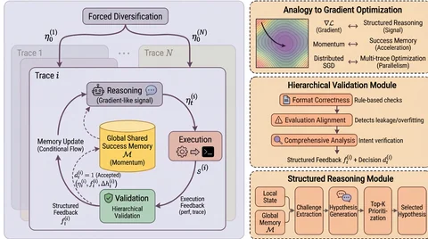
FT-Dojo: Towards Autonomous LLM Fine-Tuning with Language Agents (Fine-Tuning Setting of RD-Agent)
We introduce FT-Dojo, the fine-tuning setting of RD-Agent, with 13 tasks across 5 domains for autonomous LLM fine-tuning, together with FT-Agent, a purpose-built system that achieves the best performance on 10 of 13 tasks and iteratively improves strategies from evaluation history.
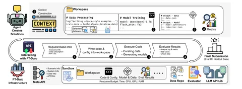
2025
R&D-Agent: An LLM-Agent Framework Towards Autonomous Data Science (Technical Report)
A top-performing open-source framework on MLE-Bench that organizes autonomous data science into two parts: Research for proposing ideas and Development for converting them into executable workflows and solutions.
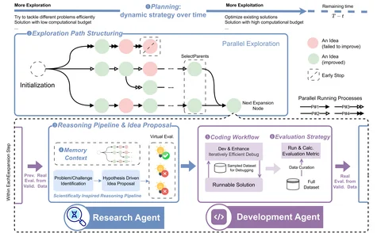
AI-Trader: Benchmarking Autonomous Agents in Real-Time Financial Markets
A comprehensive benchmark for evaluating autonomous trading agents in real-time financial markets across NASDAQ 100, SSE 50, and cryptocurrency markets, enabling fair comparison of AI trading strategies with zero human intervention.
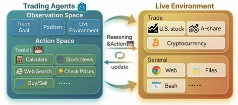
TwinMarket: A Scalable Behavioral and Social Simulation for Financial Markets
A multi-agent simulation platform for financial markets that integrates behavioral economics and social network dynamics, enabling large-scale market experiments with diverse agent behaviors.
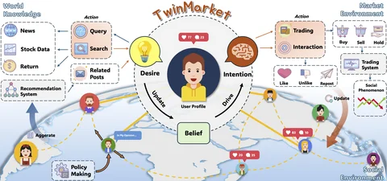
UCFE: A User-Centric Financial Expertise Benchmark for Large Language Models
A comprehensive benchmark evaluating LLMs' financial expertise from a user-centric perspective, covering domain knowledge, application capabilities, and trustworthiness across 300+ real-world questions.
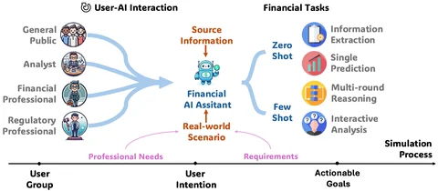
Separating Skill from Luck: LLM-Based Belief Extraction and Investment Ability Measurement of Financial Influencers
Analyzes 10M+ posts from 60,000+ financial influencers on Xueqiu using LLMs to extract stock expectations, combined with finite mixture models to separate skill from luck. Findings reveal only 46.63% possess positive investment ability, while following top 10% yields 22.4 bps daily returns.
Abstract
Abstract: This study leverages Large Language Models to extract stock expectation beliefs from millions of posts by 60,000+ financial influencers on Xueqiu, and employs finite mixture models with EM algorithm to filter out "luck noise" and scientifically measure actual investment abilities. Results show only 46.63% of influencers possess positive investment ability, with merely 2.22% achieving strong weekly returns of 1.25%. A long-short portfolio following top 10% influencers yields 22.4 bps daily returns and 4.94x cumulative returns from 2016-2025. Retail investors struggle to identify skilled influencers, while institutional investors respond more to high-ability KOLs. The methodology provides regulators and platforms with tools to identify and monitor financial social media content.
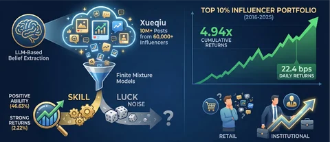
Shared Fortunes and Risks: Stock Price Spillover Effects of Corporate Ties — Evidence from the Chinese Social Media Platform "Xueqiu"
Investigates stock price spillover effects through corporate network ties on social media, revealing how social connections influence market dynamics and investor behavior.
Abstract
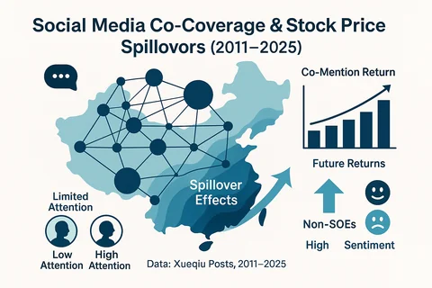
2024
Open-FinLLMs: Open Multimodal Large Language Models for Financial Applications
A series of Financial LLMs including FinLLaMA (pre-trained on 52B tokens), FinLLaMA-instruct (573K instructions), and FinLLaVA (first open-source financial multimodal LLM) trained with 1.43M image-text instructions.
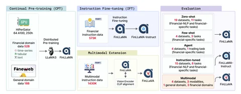
Do investors' actions speak louder than words?
Examines whether posts on Chinese social media propagate noise or information, proposing that both coexist but can be distinguished by posters' trading behavior. Observing trading actions helps assess the reliability of expressed views.
Abstract
Abstract: A large body of literature has examined whether posts on social media propagate noise or information. In this paper, we propose that both coexist on Chinese social media platforms but can be distinguished by posters' trading behavior. Individuals may post articles on social media that do not reflect their true opinions, often for impression management purposes, resulting in inconsistency between their words and subsequent actions. Additionally, observing a poster's trading behavior prior to posting can help assess the reliability of their expressed views.
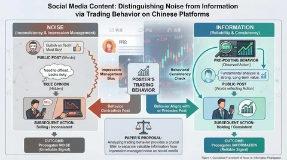